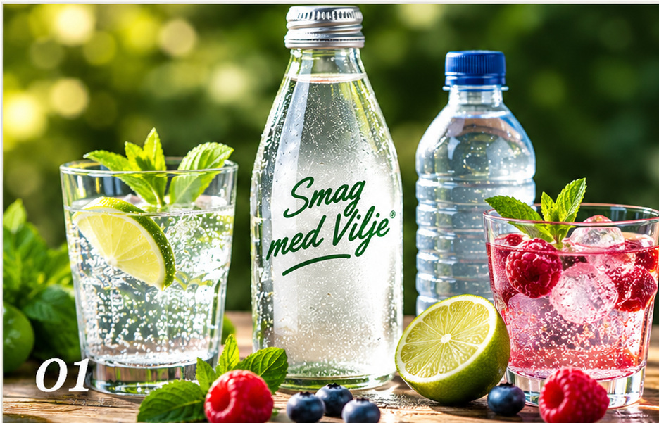
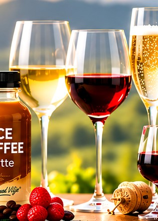
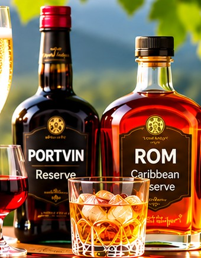
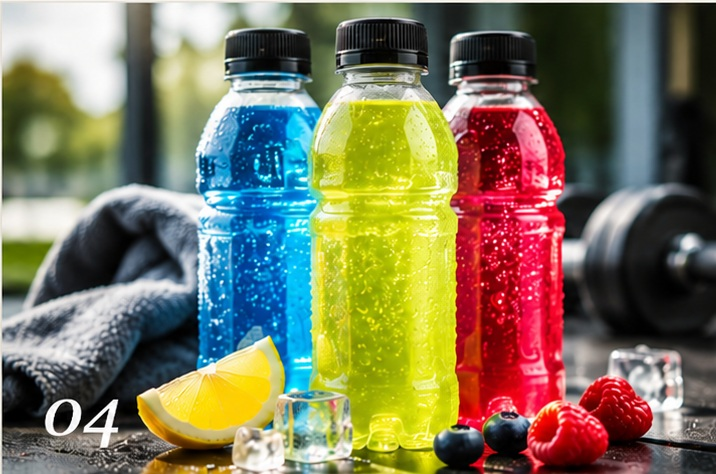
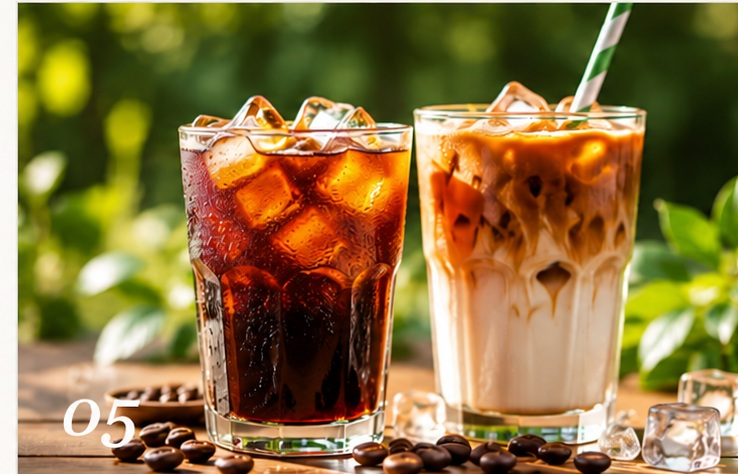
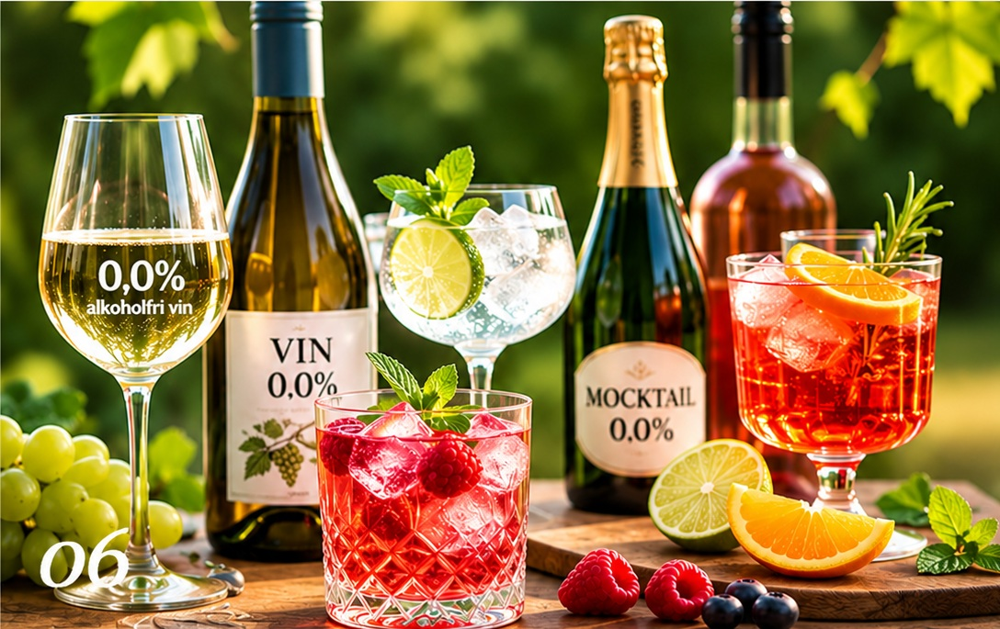

01PURITY · FLAVOUR · REFRESHMENT
Water – plain and flavoured
Natural still and sparkling water – and flavoured water, both still and sparkling. We are especially interested in low-sugar and sugar-free varieties.
We are curious about beverages with something special to offer – from pure water and new flavours to wine, iced coffee and exciting specialities.
EXPLORE OUR AREAS OF INTERESTWe explore and evaluate products with taste as our starting point.

01Natural still and sparkling water – and flavoured water, both still and sparkling. We are especially interested in low-sugar and sugar-free varieties.

02Red, white, rosé and sparkling wines, as well as alcohol-free alternatives from interesting producers.

03Port, rum and other selected specialities with character and a story to tell.

04Drinks for hydration, energy and performance – focused on real needs and new possibilities.

05Iced coffee drinks and convenient ready-to-drink options in a range of flavours.

06With or without alcohol – taste comes first.
Ready-mixed alcohol-free drinks that taste the way a proper cocktail should. We are also interested in alcohol-free wine and exciting alternatives where taste, quality and experience come first.
These categories reflect our areas of interest and do not necessarily represent products currently in stock.
We welcome enquiries from producers and suppliers with interesting beverages for the Danish market.